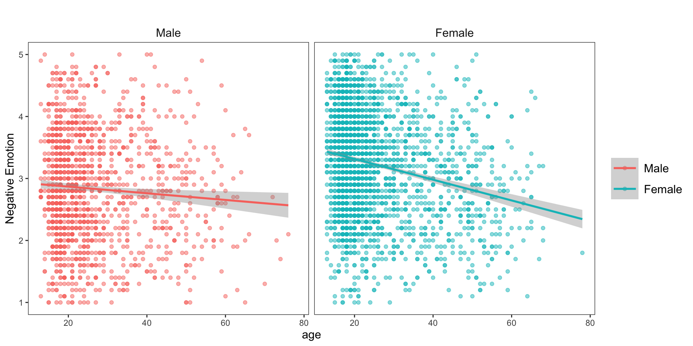
Welcome to the End of COMPSS 222
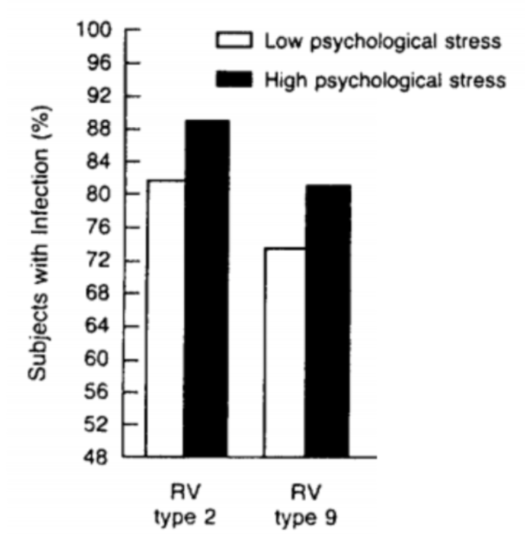
| Model 1 | Model 2 | Model 3 | Model 4 | |||||
|---|---|---|---|---|---|---|---|---|
| (Intercept) | 3.45 *** | (0.03) | 2.83 *** | (0.02) | 3.17 *** | (0.04) | 2.98 *** | (0.06) |
| age | -0.01 *** | (0.00) | -0.01 *** | (0.00) | -0.01 ** | (0.00) | ||
| genderFemale | 0.40 *** | (0.03) | 0.38 *** | (0.03) | 0.67 *** | (0.07) | ||
| age:genderFemale | -0.01 *** | (0.00) | ||||||
| N | 4180 | 4150 | 4148 | 4148 | ||||
| R2 | 0.03 | 0.05 | 0.07 | 0.08 | ||||
| *** p < 0.001; ** p < 0.01; * p < 0.05. | ||||||||
RECAP : Four Validities This Semester
- Construct Validity
- External Validity
- Internal Validity
- Statistical Conclusion Validity
1. Construct Validity
- Are we measuring what we want to measure?
- (If not, how might this influence the results?)
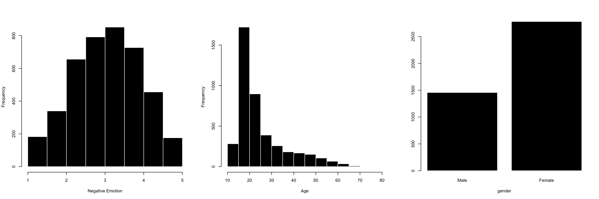
2. External Validity
Do our results generalize to other samples?
- sampling error : do we trust the statistical testing [& power?]
- sampling bias : who are these 4000 random people on the internet? what cultural differences might influence the results (and how)??
3. Internal Validity.
- Is the relationship between the variables causal?
- (If not, what other variables might explain the relationship?)
effect of age.
- causal :
- reverse causal :
- 3rd variables :
effect of gender.
- causal :
- reverse causal :
- 3rd variables :
PRACTICE : 3/4 validities
- on the vision board : identify a question and theory you have (capstone or otherwise)
- Real-Life : does steaming an egg make it easier to peel
- MaCSS / Project / Work / Other Life : does acknowledging language differences improve the classroom experience?
- construct validity : how would you measure these variables?
- external validity : how much data would you need (power planning)? biases in your sample?
- internal validity : possible to do an experiment (manipulation / random assignment)?
BREAK TIME.
4. Statistical Conclusion Validity. Are we adhering to “best practices” and doing the analyses correctly?
4. Conclusion Validity. Lab 5.
- Issues of construct validity and external validity.
- But also :
- I could not exactly replicate these results.
- “Unclear” why the researcher defined these specific models…
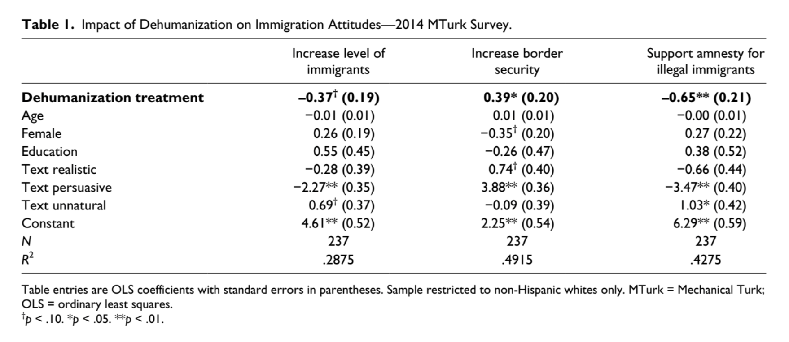
4. Statistical Conclusion Validity.
- pre-register analyses. (and don’t cheat or “p-hack”.)

Allen C, Mehler DMA (2019) Correction: Open science challenges, benefits and tips in early career and beyond. PLOS Biology 17(12): e3000587. https://doi.org/10.1371/journal.pbio.3000587
4. Statistical Conclusion Validity.
pre-register analyses. (and don’t cheat or “p-hack”.)
use the “right” methods. science is hard. lots of tools to try and do the right thing.
Common Statistical Mistakes. Any you are doing? Questions?? Feeling the pressure???
Absence of an adequate control condition/group
Interpreting comparisons between two effects without directly comparing them
Spurious correlations
Inflating the units of analysis
Correlation and causation
Use of small samples
Circular analysis
Flexibility of analysis
Failing to correct for multiple comparisons
Over-interpreting non-significant results4. Statistical Conclusion Validity.
pre-register analyses. (and don’t cheat or “p-hack”.)
use the “right” methods. science is hard. lots of tools to try and do the right thing.
be transparent. share code and data; science is a process.
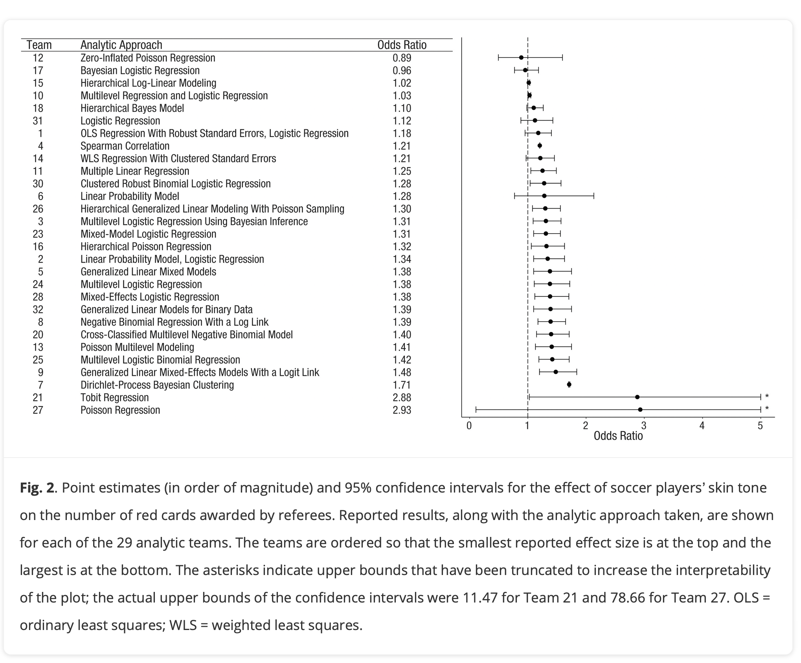
Logistic Regression
what’s wrong?
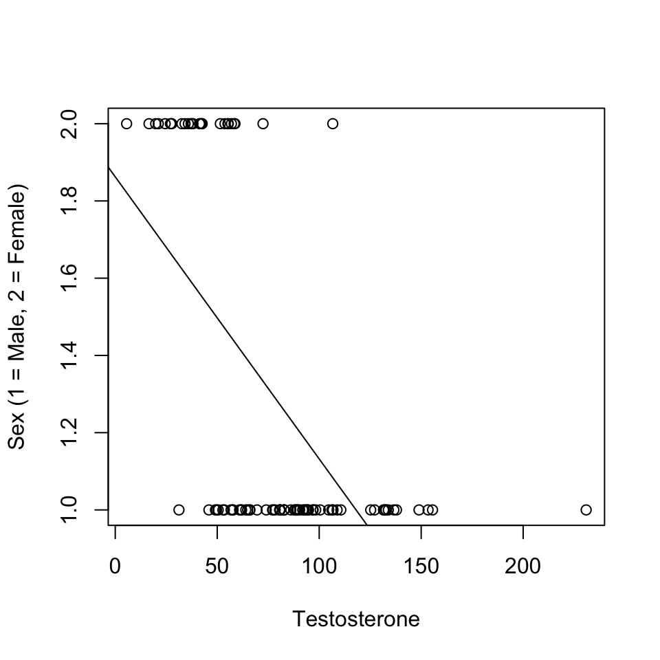
what’s better?
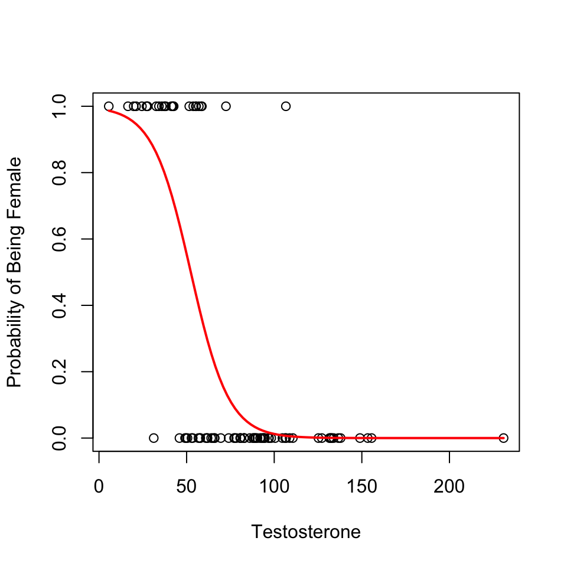
Call:
glm(formula = sexR ~ test_mean, family = "binomial", data = h)
Coefficients:
Estimate Std. Error z value Pr(>|z|)
(Intercept) 4.81974 1.19821 4.022 5.76e-05 ***
test_mean -0.09200 0.02081 -4.420 9.86e-06 ***
---
Signif. codes: 0 '***' 0.001 '**' 0.01 '*' 0.05 '.' 0.1 ' ' 1
(Dispersion parameter for binomial family taken to be 1)
Null deviance: 109.96 on 89 degrees of freedom
Residual deviance: 56.09 on 88 degrees of freedom
(32 observations deleted due to missingness)
AIC: 60.09
Number of Fisher Scoring iterations: 7Real-Life Example
Link to Article : Somers, J. M., Rezansoff, S. N., Moniruzzaman, A., Palepu, A., & Patterson, M. (2013). Housing First reduces re-offending among formerly homeless adults with mental disorders: results of a randomized controlled trial. PloS one, 8(9), e72946.
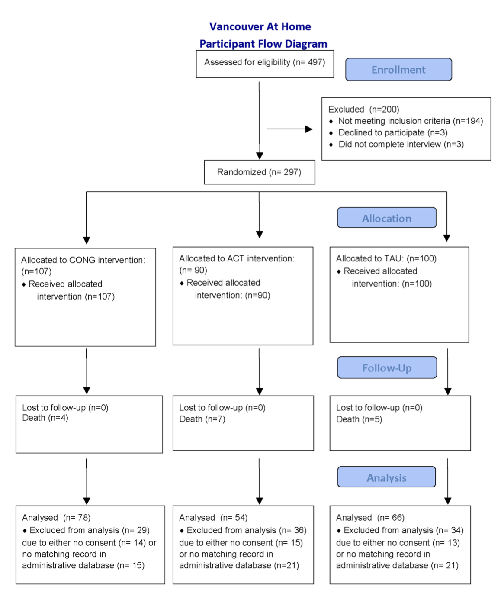
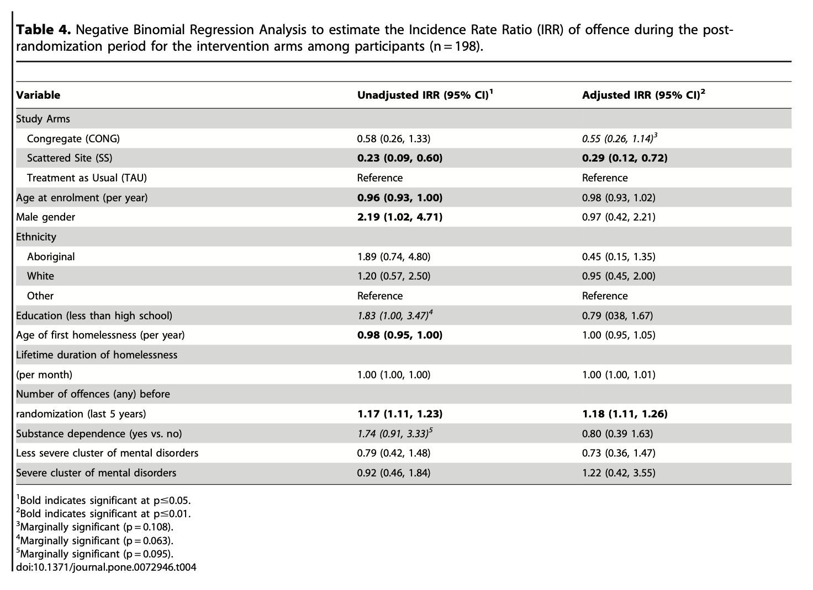
see chapter 12
X. Prof More Radical Questions
tolerate “imperfect” results. maybe there is no truth?
focus on the practice. why does this matter? who will this help (in practice)? do I really believe this is real?
“If you want knowledge, you must take part in the practice of changing reality. If you want to know the taste of a pear, you must change the pear by eating it yourself. If you want to know the structure and properties of the atom, you must make physical and chemical experiments to change the state of the atom. If you want to know the theory and methods of revolution, you must take part in revolution. All genuine knowledge originates in direct experience.” - MaoBYE!! THANKS!!!

WOULD YOU LIKE TO LEARN MORE???
Multilevel Models (MLM). Conceptual Understanding
Definition : Multilevel Models (MLM)
Hierarchical linear models, mixed effects models, random effects models, others?
Level 1 : the smallest unit of analysis (where the DV is measured)
Level 2 : organize non-independent responses at Level 1.
Examples :
non-independence : students in a school are similar to each other
non-independence : person at time 1 is still the same person at time 2
The Formulas
The Linear Model
\[\huge y = \beta_0 + \beta_1x_1 + ... + \beta_kx_k + \epsilon\]
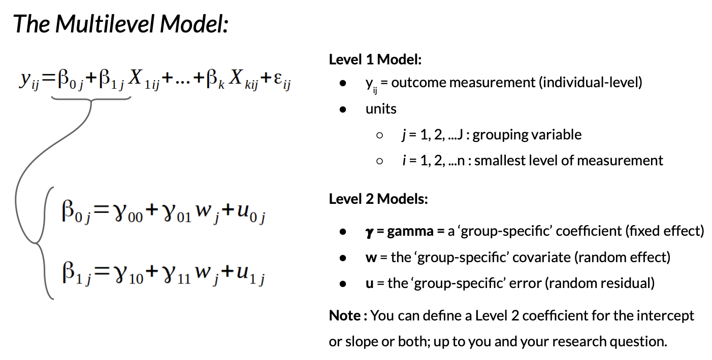
Why Are We Doing This?
- The Assumption of Independence Has Been Violated! (MLM increases our power and reliability as scientists.)
- Multiple measures of an individual gives you a more reliable estimate of what and who they are.
- A person serves as their own control, so can more precisely examinine how a person changes over time.
- Model more complex phenomenon.
- How people change over time (within-person variation).
- Simpson’s Paradox
How Do We Do This in R?
Example : The Sleep Dataset
From the ?sleep dataset: “Data which show the effect of two soporific drugs (increase in hours of sleep compared to control).”
- Extra : increase in hours of sleep
- Group : drug given (1 = control; 2 = drug)
- ID : patient ID
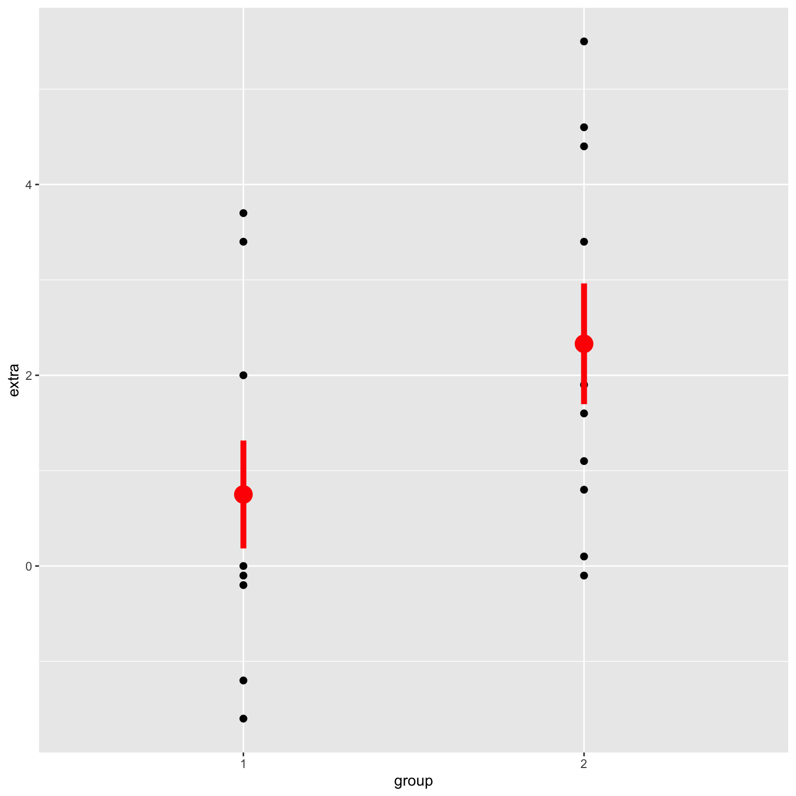
Call:
lm(formula = extra ~ as.factor(group), data = sleep)
Residuals:
Min 1Q Median 3Q Max
-2.430 -1.305 -0.580 1.455 3.170
Coefficients:
Estimate Std. Error t value Pr(>|t|)
(Intercept) 0.7500 0.6004 1.249 0.2276
as.factor(group)2 1.5800 0.8491 1.861 0.0792 .
---
Signif. codes: 0 '***' 0.001 '**' 0.01 '*' 0.05 '.' 0.1 ' ' 1
Residual standard error: 1.899 on 18 degrees of freedom
Multiple R-squared: 0.1613, Adjusted R-squared: 0.1147
F-statistic: 3.463 on 1 and 18 DF, p-value: 0.07919Fixed Effects : The “Average” across all the grouping variables.
Linear mixed model fit by REML. t-tests use Satterthwaite's method [
lmerModLmerTest]
Formula: extra ~ as.factor(group) + (1 | ID)
Data: sleep
REML criterion at convergence: 70
Scaled residuals:
Min 1Q Median 3Q Max
-1.63372 -0.34157 0.03346 0.31511 1.83859
Random effects:
Groups Name Variance Std.Dev.
ID (Intercept) 2.8483 1.6877
Residual 0.7564 0.8697
Number of obs: 20, groups: ID, 10
Fixed effects:
Estimate Std. Error df t value Pr(>|t|)
(Intercept) 0.7500 0.6004 11.0814 1.249 0.23735
as.factor(group)2 1.5800 0.3890 9.0000 4.062 0.00283 **
---
Signif. codes: 0 '***' 0.001 '**' 0.01 '*' 0.05 '.' 0.1 ' ' 1
Correlation of Fixed Effects:
(Intr)
as.fctr(g)2 -0.324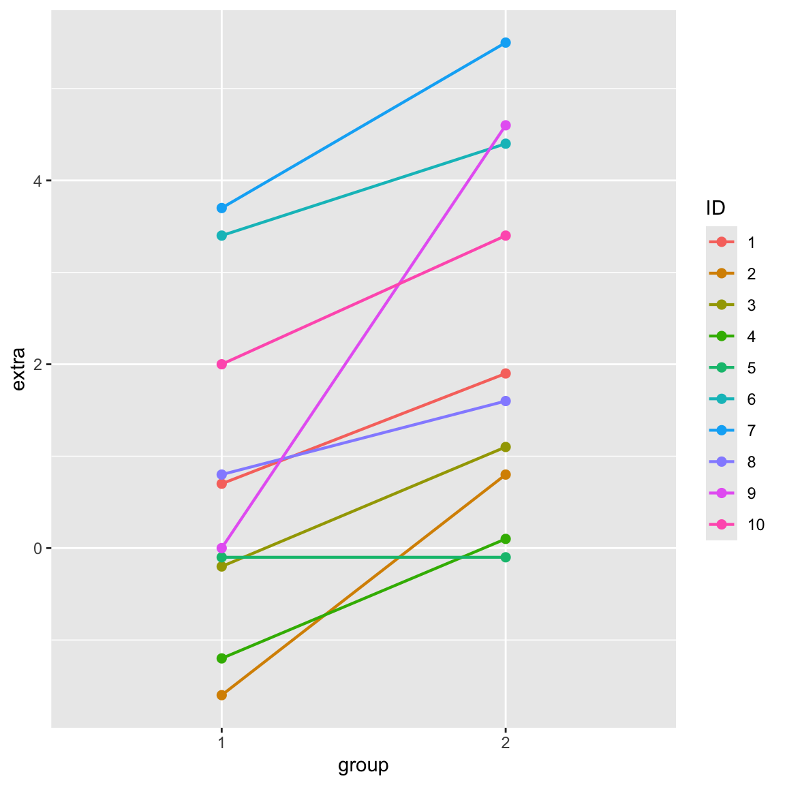
ICC = Intraclass Correlation Coefficient = how much the variation in our grouping variable (here : subject) explains total variation.
To calculate : take variance of intercept / total variance
[1] 0.7901628OR :
# Intraclass Correlation Coefficient Adjusted ICC: 0.790 Unadjusted ICC: 0.668